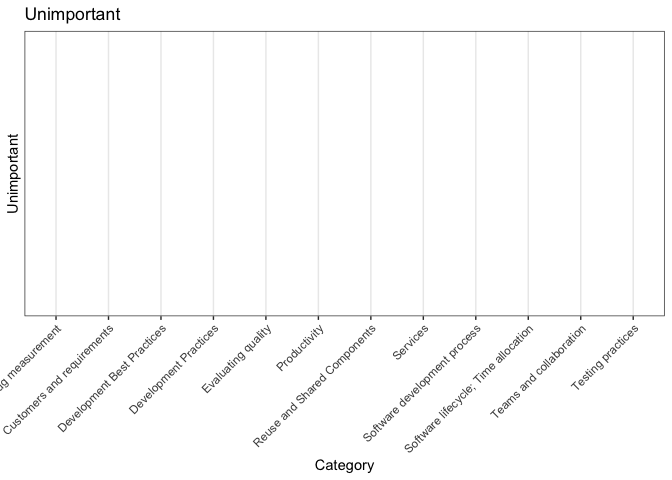

Chapter 4 Analyze This!
4.0.1 Before this lesson:
- Read the paper: “Analyze This!”
- Get comfortable copying and pasting from this Markdown and running in your own R file
- Group discussion about how you might use statistics in software engineering
4.1 What is “Evidence”?
You’re about to learn a term that hopefully won’t haunt you like it haunted me: epistemology. I recently spent an entire year using the term to the point of irony, after having it repeated over and over in my first-year PhD courses. Epistemology is the study of knowing. I won’t go too far into this, as it’s literally PhDs worth of studying, but it’s “how we know what we think we know”.
the theory of knowledge, especially with regard to its methods, validity, and scope. Epistemology is the investigation of what distinguishes justified belief from opinion
Miraculously, we can go through years of school and never question how we know anything. We learn from history books, practice math formulas, create artwork, and maybe conduct some neat experiments. All of that knowledge had to come from somewhere, and some of it is wrong.
Part of being a digital citizen, software engineer, and scholar is learning how to defend what you think you know. Whether that’s in political arguments or convincing someone why pickles are a polarized issue, you will be caught over and over again in some form of argumentation. In software engineering, there are opinions abound. On the best language, best practice, hottest new package, best workflow, etc.
Through these lessons, you will develop your own ability to question how we know what we know; walking through how we can use data and statistics to make conclusions about the software industry. Some people believe that statistics are the ground truth, while others believe that numbers could never capture the nuance of a problem. Both of these views are dangerous. We are about to embark on a journey into Statistical Wonderland, where some things are nonsense, some things are useful, some things are wrong, and some things are awesome. The goal of this curriculum is to give you a toolbox to find your own answers; to learn to read and dissect academic findings and to apply the useful results to your own practice of software engineering.
4.2 Surveying a Population
Sometimes we don’t know anything about anything. We all have to start somewhere. The paper “Analyze This!” approaches an unexplored research area with a certain elegance. They asked 1500 Microsoft engineers the following:
Please list up to five questions you would like a team of data scientists who specialize in studying how software is developed to answer
They then asked a new sample of 2500 Microsoft engineers to prioritize the questions.
So yeah, they just asked. If you want to know what the most important things that Data Scientists should work on, just ask. This is an incredible, high-powered starting point for distilling how we should investigate what is most important to the stakeholders involved. Let’s take a look at how this sample prioritized things, while also getting a lesson in R.
4.2.1 Loading Libraries
Libraries may also be referred to as packages. They are collections of functions that someone else has written that are not part of the base programming language, but have functions for a specific purpose. So for instance, R has a plot function, but we use ggplot2 because it has better graphics and more customization. It’s like an “add-on” or “expansion pack” to a programming language.
library(readxl)
library(ggplot2)
library(kableExtra)
library(dplyr)4.2.2 Reading in the Data
Here we have an Excel spreadsheet, but many data files will be Comma Separated Values (.csv). We are using the readxl library to convert the spreadsheet into a dataframe that R can work with. Here I have printed out the head and tail of this dataframe, but you should run the View(data) command in R to see the entire thing. You can run that command from the console after highlighting it in your R code.
data <- read_excel("data/145Questions.xlsx",skip=3) #skip the first three rows because they have some copywrite stuff from Microsoft that reads in a little weird4.2.3 Renaming Columns
The columns had names that weren’t as conducive to the code we will write, so here’s how to rename columns in a dataframe. You do need to include all of the names using this technique.
colnames(data) <- c("QuestionID","Category","Question","Essential", "Worthwhile" , "Unimportant" , "Unwise","Don't Know" , "Distribution", "EssentialPercent" , "WorthwhilePercent" ,"UnwisePercent" , "EssentialRank" , "WorthwhileRank", "UnwiseRank")
kable(head(data[1:8])) %>%
kable_styling(bootstrap_options = c("striped", "hover"))| QuestionID | Category | Question | Essential | Worthwhile | Unimportant | Unwise | Don’t Know |
|---|---|---|---|---|---|---|---|
| 1 | Bug measurement | What is the impact and/or cost of findings bugs at a certain stage in the development cycle? | 50 | 52 | 11 | 3 | 1 |
| 2 | Bug measurement | What kinds of mistakes do developers make in their software? Which ones are the most common? | 48 | 65 | 2 | 0 | 1 |
| 3 | Bug measurement | In what places in their software code do developers make the most mistakes? | 41 | 69 | 7 | 0 | 0 |
| 4 | Bug measurement | What kinds of mistakes are caught by static analysis? | 24 | 59 | 24 | 2 | 4 |
| 5 | Bug measurement | How many new bugs are introduced for every bug that is fixed? | 30 | 66 | 13 | 6 | 1 |
| 6 | Bug measurement | Is the number of bugs a good measure of developer effectiveness? | 19 | 44 | 33 | 20 | 0 |
kable(tail(data[1:8])) %>%
kable_styling(bootstrap_options = c("striped", "hover"))| QuestionID | Category | Question | Essential | Worthwhile | Unimportant | Unwise | Don’t Know |
|---|---|---|---|---|---|---|---|
| 140 | Testing practices | How do we measure test coverage with unit tests? | 21 | 52 | 38 | 1 | 0 |
| 141 | Testing practices | How can we create and run unit tests whose code and test inputs can be shared across teams? | 27 | 61 | 22 | 2 | 0 |
| 142 | Testing practices | Should we do Test-Driven Development? | 32 | 48 | 28 | 2 | 2 |
| 143 | Testing practices | What are benefits of Test-Driven Development for Microsoft? | 22 | 61 | 21 | 2 | 4 |
| 144 | Testing practices | How should we do Test-Driven Development while prototyping? | 26 | 43 | 34 | 4 | 2 |
| 145 | Testing practices | When do I maintain or update a test vs. remove it? | 21 | 56 | 31 | 3 | 1 |
4.2.4 Descriptive Statistics
Whenever we have data, we first report on descriptive statistics, which are things like the average values, the ranges of those values (highest and lowest), and other facts about the data that was collected. Descriptive statistics are contrasted with inferential statistics, which use statistical tests to draw conclusions about differences between groups, or fits of models, or other things that we can use to make sense of various phenomena. Let’s stick with descriptive statistics for now.
Note that the data we have access to is already in aggregate form (we don’t have access to each of the 2500 Microsoft engineer ratings, due to privacy). I will demonstrate how to get aggregate statistics across the categories with
dplyr. This would work even if we hadn’t already aggregated the data:
aggregate <- data %>% # this symbol is referred to as a "pipe". it "pipes" the data into the other function calls
group_by(Category) %>%
summarise(AverageEssential = mean(Essential))
kable(aggregate) %>%
kable_styling(bootstrap_options = c("striped", "hover"))| Category | AverageEssential |
|---|---|
| Bug measurement | 36.28571 |
| Customers and requirements | 45.88889 |
| Development Best Practices | 24.88889 |
| Development Practices | 31.28571 |
| Evaluating quality | 33.93750 |
| Productivity | 27.92308 |
| Reuse and Shared Components | 42.66667 |
| Services | 36.62500 |
| Software development process | 30.78571 |
| Software lifecycle; Time allocation | 35.00000 |
| Teams and collaboration | 34.63636 |
| Testing practices | 26.35000 |
4.2.5 First Visualization
We are going to make some plots. You may or may not have learned about box-and-whisker plots before, but if you haven’t, there are several pieces to these plots that help us visualize descriptive statistics. The bar in the middle of the box is the mean, and any points outside of the box-and-whisker plot are outliers, meaning they are significantly above or below the inter-quartile range. We can’t actually know too much from these plots, as they simply show us, across all categories, how willing the participants were to assign a certain label to a question. We can observe that people seemed more willing to label something as “Worthwhile” than they did “Unwise” or “Essential”. This actually makes sense, because it’s easier to label something with a less-extreme judgment. “Unwise” is seriously suggesting that something should not be done, and “Essential” is making a serious judgment call on the value of something. “Worthwhile” is more relaxed, and it seems that more people were willing to use that label instead of strongly committing on most of the topics. It’s lucky for us that everything wasn’t labeled “Essential” or we wouldn’t even have a better idea of where to start researching.
Note that I’m using something called
ggplotandcowplotto make these graphs.ggplotis a cornerstone of data visualization, whereascowplotsimply allows me to line them up horizontally. I’ve usedtheme(axis.text.x=element_blank()to remove the x-axis labels. I usetheme_bw()which stands for “Theme Black and White” because it looks better to me. You should play around with your own preferences.
essential <- ggplot(data,aes(y=Essential,))+
geom_boxplot()+
theme_bw()+
theme(
axis.text.x=element_blank(),
axis.ticks.x=element_blank())
worthwhile <- ggplot(data,aes(y=Worthwhile))+
geom_boxplot()+
theme_bw()+
theme(
axis.text.x=element_blank(),
axis.ticks.x=element_blank())
unimportant <- ggplot(data,aes(y=Unimportant))+
geom_boxplot()+
theme_bw()+
theme(
axis.text.x=element_blank(),
axis.ticks.x=element_blank())
unwise <- ggplot(data,aes(y=Unwise))+
geom_boxplot()+
theme_bw()+
theme(
axis.text.x=element_blank(),
axis.ticks.x=element_blank())
#lining up all the boxplots horizontally using cowplot
cowplot::plot_grid(essential, worthwhile, unimportant,unwise ,
ncol = 4, rel_heights = c(1, 1),
align = 'h', axis = 'lr')4.2.6 Distribution Across Questions
# How much was labeled Essential, Worthwhile, Unimportant, Unwise across the different categories?
# FIXME: IDK what the hell I'm trying to show here
ggplot(data,aes())+
geom_density(aes(Essential,fill="Essential"),alpha=.5)+
geom_density(aes(Worthwhile,fill="Worthwhile"),alpha=.5)+
geom_density(aes(Unimportant,fill="Unimportant"),alpha=.5)+
geom_density(aes(Unwise,fill="Unwise"),alpha=.5,)+
xlab("Distributed Priority Percentage Across Questions")+
theme_bw()4.2.7 Most Essential Question
ggplot(data,aes(QuestionID,Essential,fill=Category))+
geom_bar(stat="identity")+
theme_bw()# FIXME: this R syntax is grabbing the Question cell wherever the Essential value is matching the maximum Essential value. Let's see what was considered Essential by the most people!
data$Question[data$Essential==max(data$Essential)]## [1] "How do users typically use my application?"4.2.8 Most Unwise Question
ggplot(data,aes(QuestionID,Unwise,fill=Category))+
geom_bar(stat="identity")+
theme_bw()data$Question[data$Unwise==max(data$Unwise)]## [1] "Which individual measures correlate with employee productivity (e.g., employee age, tenure, engineering skills, education, promotion velocity, IQ)?"4.3 Customers Matter the Most
Specifically, people want to know about the user. Their experiences and their opinions on the tool. Do you think that academics would value this also? Or is there something about having to hit a bottom line that matters? I predict that everyone cares more about the user than we are currently catering for. In Computer Science curriculums, students are often building games or programs without ever evaluating how a user interacts with the program they’ve built; even though that’s one of the most important parts of software engineering. Perhaps CS curriculums can also take a hint from these findings.
FIXME: I think the lesson will be stronger if we encourage readers to draw this conclusion themselves…
ggplot(data,aes(Category,Essential,color=Category))+
stat_summary(fun.data=mean_cl_boot)+
ggtitle("Essential")+
theme_bw()+
theme(axis.text.x = element_text(angle = 45, hjust = 1))## Warning: Computation failed in `stat_summary()`:
## Hmisc package required for this functionggplot(data,aes(Category,Worthwhile,color=Category))+
stat_summary(fun.data=mean_cl_boot)+
ggtitle("Worthwhile")+
theme_bw()+
theme(axis.text.x = element_text(angle = 45, hjust = 1))## Warning: Computation failed in `stat_summary()`:
## Hmisc package required for this function
4.4 Developer Practices Don’t Matter
It’s actually in line with the research, there’s not a ton of need to measure (for possible intervention probably), dev practice and testing. You’ll see in some of the future lessons that we delve into developer folklore about the importance of different dogmas in software development, and how it doesn’t matter as much as many people think it does.
ggplot(data,aes(Category,Unimportant,color=Category))+
stat_summary(fun.data=mean_cl_boot)+
ggtitle("Unimportant")+
theme_bw()+
theme(axis.text.x = element_text(angle = 45, hjust = 1))## Warning: Computation failed in `stat_summary()`:
## Hmisc package required for this function
4.5 Don’t Measure Productivity
As we saw from our “Most Unwise” question, we should not be measuring productivity. Later on, you’ll see a lesson on measuring developer performance and all of the things that can go wrong. Some things should be measured, while others should be left out of the discussion. We do not need some dystopian algorithm determining if your IQ is high enough for you to do well at your job.
FIXME: again, I think the point will be stronger if we put the pieces on the table and let them decide what to eat.
ggplot(data,aes(Category,Unwise,color=Category))+
stat_summary(fun.data=mean_cl_boot)+
theme_bw()+
ggtitle("Unwise")+
theme(axis.text.x = element_text(angle = 45, hjust = 1))## Warning: Computation failed in `stat_summary()`:
## Hmisc package required for this function4.6 How Unwise is it compared to the other categories: Test of Significance
We are moving beyond descriptive statistics to inferential statistics. Here we will use a test of significance to see if Productivity is truly more Unwise to study than the other categories. According to the above graphs, we can use visual reasoning to make a judgment about this. Does the Prouctivity mean look different than the others, on average? But sometimes it is much more subtle than that, or the confidence intervals are very large (the vertical bars radiating from the mean points). That could mean that the data is really widespread, has some outliers, or doesn’t have a very large sample size. We use a Mann-Whitney U Test to compare the two groups. We will go further into detail about that test in future lessons. But for now, know that we are comparing two groups, and want to know if they are significantly different or not.
- Unwise ratings for all of the questions in the Productivity category vs. Unwise ratings for all the questions in the other categories
Our null hypothesis is what we start with. We begin with the assumption that the two groups are not different. If the result of our statistical test is a p-value less than .05, it means that there is only a 5% change our null hypothesis is wrong. This would lead us to suggest that the null hypothesis does not hold, and that the groups may truly be different after all.
mean(data$Unwise[data$Category=='Productivity'])## [1] 10.23077mean(data$Unwise[data$Category!='Productivity'])## [1] 3.204545wilcox.test(data$Unwise[data$Category=='Productivity'],data$Unwise[data$Category!='Productivity'])##
## Wilcoxon rank sum test with continuity correction
##
## data: data$Unwise[data$Category == "Productivity"] and data$Unwise[data$Category != "Productivity"]
## W = 1269.5, p-value = 0.004025
## alternative hypothesis: true location shift is not equal to 04.7 Academic and Industry Partnership for Good Research
FIXME: I’d cut this entire section for now.
In academic research, we are reminded that our projects should be “novel, feasible, and impactful”.
I often make the joke that on your first day of PhD school, you’re basically just faced with an empty desk and the task of developing something brand new and brilliant that no one else has been able to do. Good luck!
It’s actually much more structured, supportive, and gentle than that, but that’s still the crux of it. The goal is to contribute to science with something that is new, actually possible, but also helps people (my version of impactful) and contributes to what we know. This paper points out that one of the best ways to achieve all of those is to do some of your research outside of academia. Asking industry professionals what they need is good research. Asking any population of interest what they need is good practice and needs to be taken into account. We often have opinions about what we think is important, novel, feasible, etc. But our number one step as researchers is to go find out if our “hunches” are actually founded, and if anyone else sees value in what we are envisioning. Some people will be naysayers to everything; but let’s apply what we are learning about statistics to how we feel about our own ideas: if a large sample of people seem to think your work will be a good idea and will be impactful and important, (and they can’t think of someone who is already doing it), then you’ve already started on your statistical journey of knowing something.